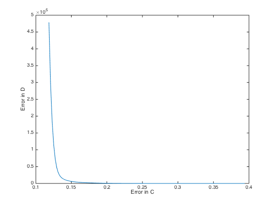
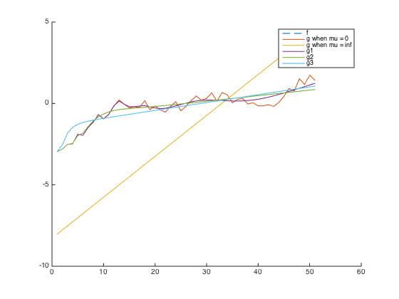

Contents
Implement the weighted sum of objectives derived in part A
clear;
curve_smoothing;
A = zeros(n-2, n);
for i = 2:n-1
A(i-1, i-1:i+1) = [i^4 -2*i^4 i^4];
end
mu = logspace(-8, 2);
for i = 1:length(mu);
Ap = [1/sqrt(n) * eye(n); sqrt(mu(i)/(n-2)) .* A];
yp = [1/sqrt(n) * f; zeros(n-2,1)];
ghat = (Ap'*Ap)\Ap'*yp;
c(i) = 1/n*norm(f-ghat)^2;
d(i) = 1/(n-2)*norm(A*ghat)^2;
end
plot(c, d);
xlabel('Error in C');
ylabel('Error in D');

For mu = 0
mu = 0;
Ap = [1/sqrt(n) * eye(n); sqrt(mu/(n-2)) .* A];
yp = [1/sqrt(n) * f; zeros(n-2,1)];
g0 = (Ap'*Ap)\Ap'*yp;
c0 = 1/n*norm(f-ghat)^2;
d0 = 1/(n-2)*norm(A*ghat)^2;
For mu = infinity
mu = 10000;
Ap = [1/sqrt(n) * eye(n); sqrt(mu/(n-2)) .* A];
yp = [1/sqrt(n) * f; zeros(n-2,1)];
ginf = (Ap'*Ap)\Ap'*yp;
cinf = 1/n*norm(f-ghat)^2;
dinf = 1/(n-2)*norm(A*ghat)^2;
For G#1
mu = 0.0000000001;
Ap = [1/sqrt(n) * eye(n); sqrt(mu/(n-2)) .* A];
yp = [1/sqrt(n) * f; zeros(n-2,1)];
g1 = (Ap'*Ap)\Ap'*yp;
c1 = 1/n*norm(f-ghat)^2;
d1 = 1/(n-2)*norm(A*ghat)^2;
For G#2
mu = 0.0000001;
Ap = [1/sqrt(n) * eye(n); sqrt(mu/(n-2)) .* A];
yp = [1/sqrt(n) * f; zeros(n-2,1)];
g2 = (Ap'*Ap)\Ap'*yp;
c2 = 1/n*norm(f-ghat)^2;
d2 = 1/(n-2)*norm(A*ghat)^2;
For G#3
mu = 0.0001;
Ap = [1/sqrt(n) * eye(n); sqrt(mu/(n-2)) .* A];
yp = [1/sqrt(n) * f; zeros(n-2,1)];
g3 = (Ap'*Ap)\Ap'*yp;
c3 = 1/n*norm(f-ghat)^2;
d3 = 1/(n-2)*norm(A*ghat)^2;
figure; hold;
plot(1:n,f, '--');
plot(1:n,g0);
plot(1:n,ginf);
plot(1:n,g1);
plot(1:n,g2);
plot(1:n,g3);
legend('f', 'g when mu = 0', 'g when mu = inf', 'g1', 'g2', 'g3');
Current plot held
